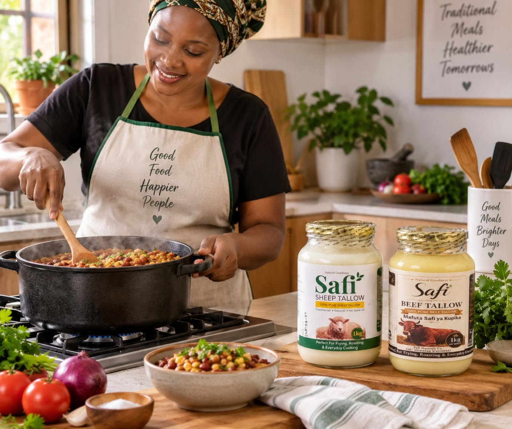
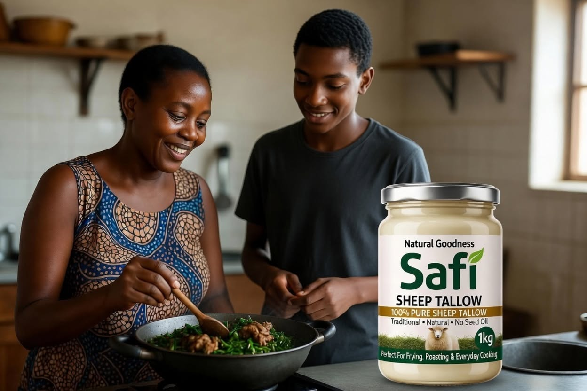

Familiar ingredients
Beef and sheep tallow are rendered animal fats with longstanding culinary uses.
Food carries memories of home. At Safi Nourish Co., we celebrate the familiar cooking fats that have long been part of family kitchens—beef and sheep tallow.
Explore our tallow ↗
Our focus is simple: make beef and sheep tallow easy to understand, easy to choose and convenient to use at home or in food-service kitchens.
Beef and sheep tallow are rendered animal fats with longstanding culinary uses.
For family meals, chapati, potatoes, frying, roasting and favourite recipes.
Glass jars, practical plastic packs and 10-litre bulk options for larger needs.

From preparing a comforting stew to getting chapati ready for the family table, the ingredients we choose are part of our everyday stories.
Safi Nourish brings the traditional use of animal tallow into modern kitchens, with clearly identified beef and sheep varieties and practical packaging choices.
Learn about tallow ↗Explore our range or contact our team for help choosing a package and arranging delivery.